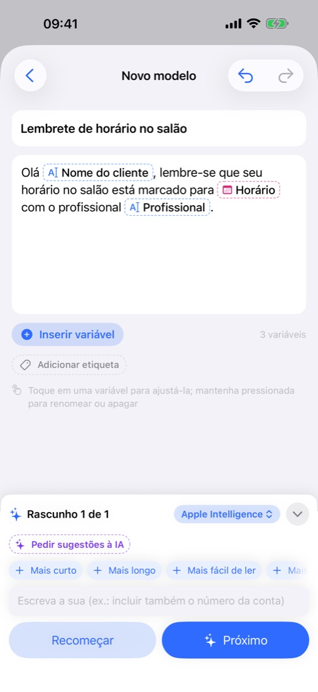
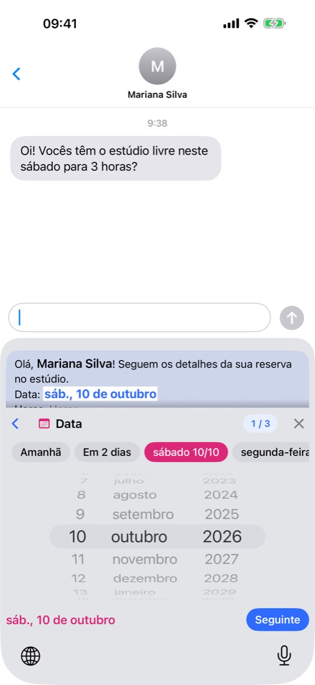
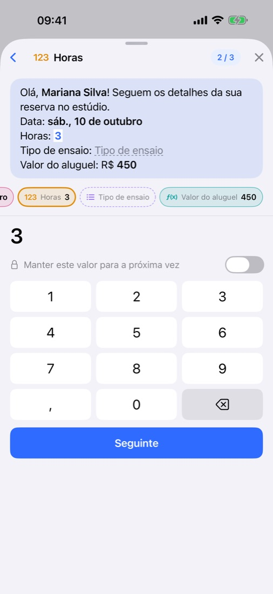
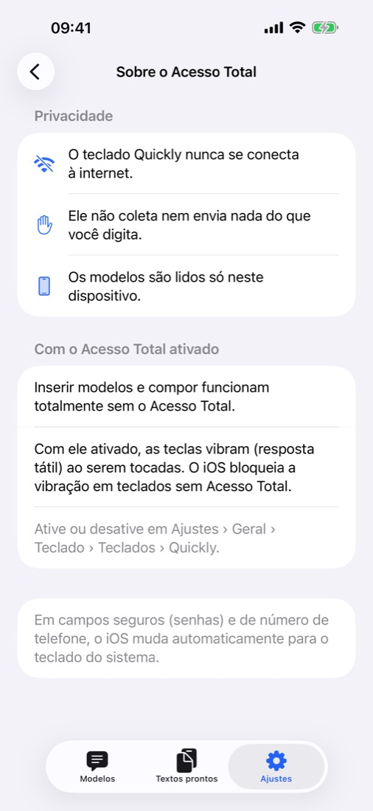

A mensagem, a IA escreve.
Você preenche só o que muda.
Escreva uma linha e a IA redige a mensagem, deixando marcado o que muda a cada envio, como um nome, uma data ou um valor. Na hora de enviar, preencha só esses espaços pelo teclado Quickly, em qualquer app.
Em breve na App StoreGrátis · Sem anúncios · iOS 18 ou posterior · iPhone · iPad

Escreva, preencha, envie.



Tudo o que você precisa, já incluído.
Descreva a situação em uma linha ou cole uma mensagem que você já manda: ela volta com o que muda em forma de variáveis. Ajuste com “Mais curto” ou “Mais educado”.
Apple Intelligence no próprio aparelho e de graça, o app do ChatGPT, do Claude ou do Gemini que você já usa, ou sua própria chave de API. Ou escreva você mesmo, sem IA.
No Mensagens, no e-mail ou no seu app de conversa, escolha um modelo e preencha os valores. E digite normalmente, em 11 idiomas.
Amanhã ou este sábado com um toque, valores com o símbolo da moeda já colocado e fórmulas que calculam o total.
Cada mensagem preenchida fica em “Textos prontos” para usar de novo. Organize com etiquetas e busque por título ou conteúdo.
Modelos, etiquetas e textos prontos ficam sincronizados nos aparelhos com a mesma conta do iCloud. Exporte um backup quando quiser. Modos claro e escuro.
Elas ficam só no seu aparelho e no seu próprio iCloud, onde nem o desenvolvedor consegue ver. Sem cadastro, sem anúncios, sem rastreamento, e o teclado nunca se conecta à internet — Privacidade